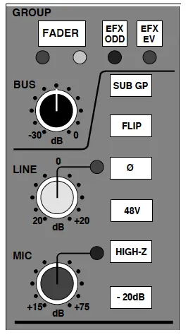
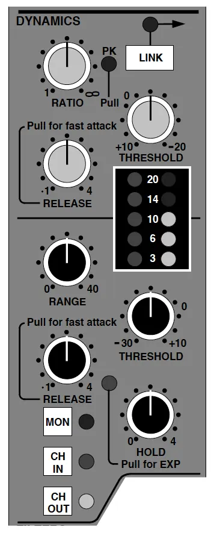
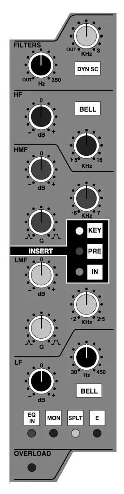
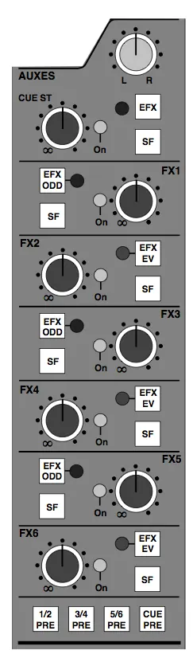

編輯前言
這個章節要介紹的是SSL非常重要的Strip，也就是輸入、動態、濾波、EQ、轉送、大小Fader等模組介紹，就算你不是直接使用SSL控台，而是使用SSL的500系列、Wave SSL Strip、UAD SSL Strip等等軟體，在閱讀本章節後，也都會對於原理與特性有更進一步的了解。SSL公司經過數十年的發展，並聽取許多工程師的建議，不斷地改良本身的特性與操作介面(例如：動態區的壓縮器與門限器沒有設計Attack旋鈕；一個自動調變的滯後關門值設計等等)，最終成為混音師的神兵利器，相信對於大家的混音工作會有更多的幫助 by hikari
I/O模組具有兩個完全獨立的訊號路徑。每個路徑擁有他自己的輸入與Fader。並且可藉由主控桌的Status區選擇狀態，來自動定義模組標準輸出路由。輸出路由可以在任何時間進行局部複寫，以提供更彈性的操作。
兩個輸入分別是
- 通道輸入(Channel Input)
- 監聽輸入(Monitor Input)
兩個Fader 分別是
- 大Fader (Large Fader, LF)以及它的Pan
- 小Fader (Small Fader, SF)以及它的Pan
(PS: 大小Fader 並沒有直接對應通道輸入與監聽輸入，兩者是可以切換的)
通道路徑的訊號來自於Mic /Line 輸入，而監聽路徑的訊號來自于Tape/Group輸入
模組輸出包含：
- 主立體聲匯流排(Main Stereo Bus, MIX))或是LCR Bus (不知道怎麼翻譯…，姑且翻成左中右匯流排吧)
- 48軌路由矩陣(48-track Routing Matrix)
- 4個立體聲次群組匯流排 (4 Stereo Subgroup Busses A, B, C and D)
- 通道群組輸出 (Channel Group Output)
任意一個Fader或是兩個Fader的訊號都是可以送到主立體聲匯流排
任意一個Fader可以將訊號送給多軌路由矩陣以及次群組輸出或群組輸出
在通道1-48中，群組輸出訊號也可以來自相對應的多軌混合匯流排(Multitrack mix bus)。
多軌與立體聲次群組訊號也可以來自任何一個輔助發送控制器(Auxiliary Send Controls)並且允許額外的效果轉送或是產生Cue Mixes。
EQ,、濾波器(指高低切)、輔助發送控制可以被切換到不同的訊號路徑上(指的是通道與監聽路經二選一)
可以注意到，這裡有很多種可能的訊號路由排列組合，可以創造各種可能。這個章節將專注在各個獨立的控制模組以及簡單的訊號路由，關於訊號路由的部分，第二個Session有更多的說明。
Channel Input Section(通道輸入區)

通道輸入區接受三種訊號的輸入
LINE
從Patch D列所送入的訊號(由於是Half-Normal，所以在沒有接Patchbay的時候，訊號直接來自於C 也就是多軌盤帶機或是Pro Tools)，包含一個trim的旋鈕可以調整-20dB to 20dB，並擁有一個綠燈作為訊號指示。
MIC
從Patch B列所送入的訊號(由於是Full-Normal，所以在沒有接Patchbay的時候，訊號直接來自於A 也就是麥克風)，包含一個trim的旋鈕可以連續調整+15dB to 75dB的gain，且20dB pad可以衰減，使得增益範圍改成-5dB to +55dB，並有一個紅色指示燈顯示訊號輸入。
SUB GP
當SUB GP按鈕被按下的時候，上面所做的訊號選擇會被覆蓋(以這個為主的意思)，通道訊號將會來自於模組的多軌匯流混音放大器(multitrack bus mix amp)，這將允許模組1-48被用於聲音次群組(audio subgroups)
FLIP
在特定通道中反轉Mic/Line訊號來源 (反轉輸入源)
Φ
訊號反相輸入
48V
按下後提供48V幻象電壓供電
HIGH-Z
將麥克風輸入端的輸入阻抗從2K歐姆增加到8k歐姆，這將允許連接Line等級的輸出訊號到麥克風輸入(如果你需要的話)，並針對某些特殊的動圈式麥克風提供了可變的輸入阻抗。
MIC以及Line 輸入將會依照你選擇的狀態(STATUS，在中控區)而自動切換。當狀態為RECORD或是REPLAY的時候，輸入為MIC。在混音模式，則輸入為LINE。當按下FLIP的時候，該獨立通道的輸入訊號源會被切換。如果按下了中控區的MASTER INPUT FLIP(在Status區域)則所有的通道輸入源都會被對調。
Dynamics Section (動態區)

動態區包含一個壓縮器(Compressor)/壓限器(Limiter)以及一個擴張器(Expander)/門限器(Gate)，他們使用相同的元素。兩個區域(指壓縮與擴張)是獨立運作的，但也可以同時運作，提供通道與監聽訊號更為複雜的操作功能。
動態區具有三個路由按鈕可以關聯(Section4會有更詳細的解說)
MON
將動態區切換到監聽路徑內，如果EQ也在監聽路徑上的話則為Post-EQ
CH IN
將動態區切換到通道路徑內且為Pre EQ (編按：可以簡單理解為緊接在Channel input後面)
CH OUT
將動態區切換到通道路徑內且為Post EQ (編按：可以簡單理解為緊接在Channel output前面)
如果CH IN (或CH OUT)與MON一起被按下，則動態區會切換到通道路徑內，但是動態的Side-Chain訊號則會來自於監聽路徑，更多細節請見Section4。
如果希望觸發訊號來自於Insert Return(Patch F排)，可以按下插入區的KEY以及 IN，我們稍後會做詳細介紹。
壓縮器(Compressor)與壓限器(Limiter)
RATIO (壓縮比)
壓縮比例。當開到1:1的時候是沒有作用的，順時鐘旋轉，則壓縮比例越來越多，當轉到底的時候，則變成一個壓限器。
壓縮器具有一個Over-easy特性(編按：推測應該是指soft knee壓縮曲線)，但是你可以把RATIO旋鈕拉起來開啟Peak Sensing模式，它將會取代over-easy特性伴隨著hard knee壓縮曲線，提供一些特殊樂器的特殊用途，當開啟這個模式的時候，PK燈會亮起。
THRESHOLD(門檻值)
當訊號超過了這個控制器所設定的值，壓縮器將會開始工作並且依照壓縮比進行壓縮。這個控制器提供了自動化的Gain值(編按：所以SSL沒有Gain這個旋鈕，而是依照Threshold自動補償)，也就是說使用比較低的Threshold會自動增益輸出等級，這樣提供了一致又穩定的輸出Level。
Release (釋放速度)
用來設定當壓縮器要回到一般模式的時候，所需的時間(單位為秒)。此控制器也包含了一個拉起切換功能，當拉起時切換到Fast Attack Times，Attack固定為20dB削減/每30ms，當按下後則Attack回復成程序關聯模式(Program Dependent)，時間為3mS到30mS。
右側的黃色與紅色LED表示被壓縮量
擴張器(Expander)與門限器(Gate)
這區可以藉由拉起HOLD旋鈕，將功能由∞:1的Gate切換成2:1的Expander，並且在拉起時會用紅色LED燈表示目前狀態。
RANGE
定義Expander/gate的工作區域(編按：就是從Threshold以下，有多少dB的動態範圍會被Gating/Expansion)。假如逆時鐘轉到底(0)，則不作用；假如順時鐘轉到底(40)，則提供了一個50dB的工作範圍(編按：我也不知道為什麼旋鈕寫40但是說明書說是50dB….)。
THRESHOLD(門檻值)
可變的滯後(Hysteresis)被包括在Threshold電路中，對任何給定的開門設定(Open setting)，Expander/Gate將具有一個比較低的關門閥值。當Threshold下降時，這個滯後值會增加。這對於音樂錄音是非常有幫助的，它允許樂器低於開門閥值後才被Gating/Expansion衰減。（編按：就是說Threshold就是開門閥值，但是關門閥值會比較小，而且會隨著Threshold縮小而更小。）
RELEASE(釋放速度)
這定義了訊號低於Threshold的時候，訊號壓縮到目標Level速度，可以設定0.1-4秒。此控制器也包含了一個拉起切換功能，當拉起時切換到Fast Attack Tims，Attack固定為40dB/每100us，當壓下去的時候則為linear attack time，40dB/每1.5ms。Attack代表的是訊號高於Threshold後，訊號回復原始強度的時間。當被Gating的訊號具有非常陡峭的邊緣，如爵士鼓，那麼一個慢的Attack也許會屏蔽掉初始的重擊感(Thwack)，所以你必須選擇適當的Attack Time. （編按：就是建議你爵士鼓要拉起來了，需要注意這邊的Attack是指訊號回到原始強度的時間，也就是聲音出來的時間，跟壓縮器是剛好相反的)
HOLD (延時釋放)
定義當訊號低於Threshold值但是門還沒關閉的延遲時間，可從0調整到4秒。這個旋鈕具備一個拉起開關可以將Gate切換為Expander。
綠色LED燈標示訊號被縮減的情況(編按：滿燈為完全關門，沒有燈為完全開門)
LINK
位於本區塊最上方的LINK按鈕可以將該單元的Side Chain訊號與右側的動態區Side Chain相連結。當兩個動態區被LINK的時候，控制電壓將會被加總(sum)，這使得兩個動態區會具備相同的動態縮減控制。
注意！LINK兩個Gate並沒有辦法實現用一個訊號去打開另一個門，如果你真的需要用這個功能，有個簡單的方法可以做到，就是藉由Patching Insert並使用KEY的功能，我們稍後會解釋。
注意！如果你並沒有開啟動態區的功能(按下MON/CH IN / CH OUT)任意一個，則Side Chain功能也會被Bypass
Filter and Parametric Equalizer Section (濾波器與參數等化器)

這個區塊由四個EQ加上高低通濾波器所組成，濾波器與EQ都可以在模組內分別被路由到不同路徑。
Routing Buttons (路由按鈕)
在這個模組內具有四個路由按鈕，在下一章會有更多關於路由的細節，在此我們僅在底下做簡單介紹：
EQ IN
啟動此模組(EQ+Filter)到電路中。假如沒有其他開關被按下，則EQ會在通道路徑(Channel Path)而且後面接Filter，本切入開關是可以被電腦自動化，更多細節請參考電腦使用手冊。
DYN SC
將濾波器作用在動態模組的Side Chain上，EQ部分則是可以被獨立切換到通道或是監聽路徑。其中SYN SC按鈕可以覆寫SPLT功能。(編按：意思是可以把觸發動態的訊號先過Filter再以Side-Chain的方式送進動態區來觸發，但本身的訊號並沒有過Filter)
MON
將此模組以先過EQ再過Filter的方式切入監聽路徑。注意必須要有按下EQ IN否則這個功能沒有作用。如果動態區也被切到監聽路徑的話，此EQ+Filter模組會在動態之前。（編按：等同於通道路徑上的CH OUT+EQ IN)
SPLT
可以分離FILTER電路並將它直接放置於於通道輸入之後(編按：也就是訊號處理的第一站，比CH IN還前面)
這允許Filter可以在錄音模式下，先在通道路徑處理被送到盤帶機的訊號，而僅在監聽路徑使用EQ。這也很常被使用在混音模式下，當額外的訊號經由小Fader送進Mix Bus時，Filter可以經由大Fader處理通道訊號，EQ則可以經由監聽輸入與小Fader處理訊號。
(編按：E按鈕指的是E系列模式，將會在下文進行說明)
Parametric Equalizer (參數等化器)
EQ可以切換成兩種完全不同的特性曲線，分別是基於G系列EQ以及最後一版的E系列EQ。
HF Section (高頻區)
包含了一個擱架式濾波器(Shelving Filter)，並由一個可變截止頻率(Cut-off frequency)以及可增減音量的控制器所控制。我們可以藉由按下E按鈕將曲線切換為更為平滑的曲線(Shallower Curve)。按鈕BELL則是將曲線切換為鐘形曲線(編按：在此原文使用Peaking Curve)
HMF Section (中高頻)
一個連續可變的Q(fither width)、一個+/-20dB的增益以及一個中心頻率為600Hz-7kHz的控制旋鈕
LMF Section (中低頻)
一個連續可變的Q(fither width)、一個+/-20dB的增益以及一個中心頻率為200Hz-2.5kHz的控制旋鈕
在一般的使用情況下（編按：指G系列模式)，EQ的中高頻與中低頻頻帶(Band)具有連續可變的Q(編按：原文Bandwith，但是參考下一句，認為本句應該是指Q)，它是被定義為Gain/BandWidth (編按：品質因子一般定義為最高能量/衰減3dB的頻寬)，因此Gain會隨著頻寬增加而被減少(？)
當EQ切換到E系列模式下(按下E)，則在任何Gain的情況下頻寬都是常數，因此當固定Q值時，較低的Gain他的EQ曲線會較狹窄。
LF Section (低頻區)
包含了一個擱架式濾波器(Shelving Filter)，並由一個可變截止頻率(Cut-off frequency)以及可增減音量的控制器所控制。我們可以藉由按下E按鈕將曲線切換為更為平滑的曲線(Shallower Curve)。按鈕BELL則是將曲線切換為鐘形曲線(編按：在此原文使用Peaking Curve)
Filter (濾波器)
我們可藉由旋轉到底而完整的Bypass濾波器，也就是切到Out的位置。
高通濾波器斜率為18dB/每倍頻，低通濾波器則為12dB/每倍頻。
Overload Indicator (過載指示器)
過載電路於三個不同的位置監控通道路徑的訊號大小。我們可以從中央控制區調整過載燈亮起的門檻值，調整範圍為+18dBua到+24dBu(每個Step為1dB)，這三個監控點分別為：前通道Fader,後insert點以及通道輸入點(訊號尚未處理時)
Insert Point(插入點)
插入點可以設定為EQ前、EQ後或是並且在Fader前，Patchbay Row E總是程載訊號，並且經由內部Return回RowF。IN開關的功用是允許RowF的訊號進入訊號路徑，因此任何設備都是可以接上Row E,F 並且藉由開關控制。
IN開關可以被自電腦動化控制，相關說明請參考電腦使用手冊。
Insert Return可以被用於動態區的key輸入。我們也可以藉由KEY開關重新路由訊號並送到動態處理器的Side-Chain輸入部分，相關細節可以看看本文上面的動態模組部分。
Auxiliary Sends(輔助轉送)

這個區塊由一個立體聲以及六個單聲道轉送(SEND)所構成，任一個聲音路徑都可以藉由各模組的大小Fader所控制並且被路由到任意的轉送Pre/Post Fader訊號到匯流排。
每個轉送模組帶有一個可控制Level，且可以藉由下壓達到開啟/關閉的旋鈕，因此我們很容易切換並使用預設轉送量，此開關可以被電腦自動化控制並由電子方式鎖定。一個黃色的LED燈標示轉送是否被開啟。而立體聲轉送則多包括了一個PAN控制。
來源選擇開關有以下選擇：
SF(小Fader)
當按鈕被按下後，訊號來自於小Fader的訊號路由，若SF按鈕沒按則訊號來自於大Fader訊號路由。
PRE
4個按鈕位於區塊下方，允許輔助發送訊號成對切換成Pre-Fader，也就是說當按鈕按下後，訊號為Pre-Fader，若沒按則是Post-Fader。
EFX
每個輔助發送控制器可以藉由EFX按鈕，將自己的匯流排斷開連結並重新路由到ABCD任何一個立體聲匯流排、多軌匯流排或是直送通道輸出。在偶數輔助發送軌道(FX2, FX4, FX6)按下EFX按鈕則會路由發送訊號到EFX EVEN匯流排，並用一個綠燈標示該訊號路由已經作用。同理，在奇數輔助發送軌道(FX1, FX3, FX5)按下EFX按鈕則會路由發送訊號到EFX ODD匯流排，並用一個紅燈標示該訊號路由已經作用。而在Cue ST軌道上按下EFX按鈕，則會將左聲道送到EFX ODD匯流排，右聲道送到EFX EVEN匯流排。只有一個輔助發送可以被指派到EFX匯流排，也就是說，最多只能有一個數量的odd匯流排以及一個even匯流排，或是一組CueST被指派到EFX匯流排。編號較小的轉送軌優先度會高於較大編號的轉送軌，而Cue ST軌則是高於所有Mono軌道。(編按：也就是說如果你一次按下了多個EFX按鈕，則會以比較上面的為主，下面會自動被Cut掉，EFX Bus就是只能乘載一個Odd以及一個Even訊號)。
此特徵允許在不經過小fader的情況下，允許一個大數量的獨立耳機監聽或是效果發送混音被產生。
所有的輔助轉送輸出可輸出至jack field並且被使用或是送到效果單元。在第五章我們會談論更多的
Foldback以及 Studio Loudspeaker 系統。
責任編輯：Hikari
技術顧問：Ken, 眯眯
本說明書版權歸Solid State Logic, Oxford, England所有，中文化僅供技術交流與強力錄音室內部使用，禁止用於商業用途。
PDF版本：點我下載
上篇：SSL說明書導讀-Section II: Basic Routing and Signal Flow （下）混音與訊號輸出篇